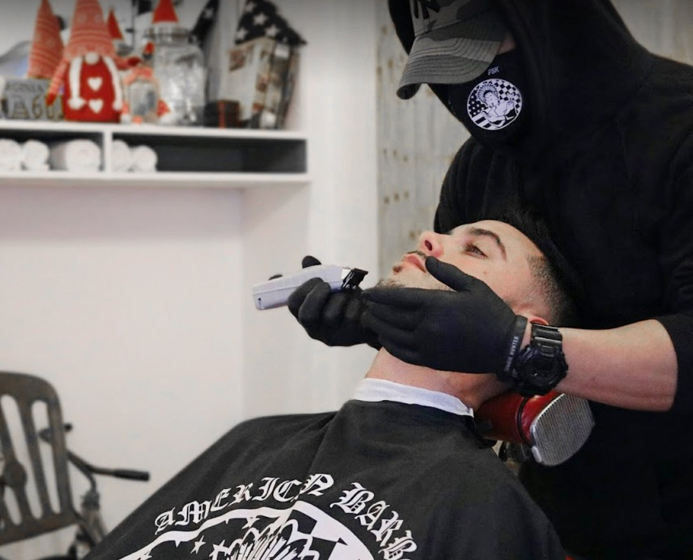
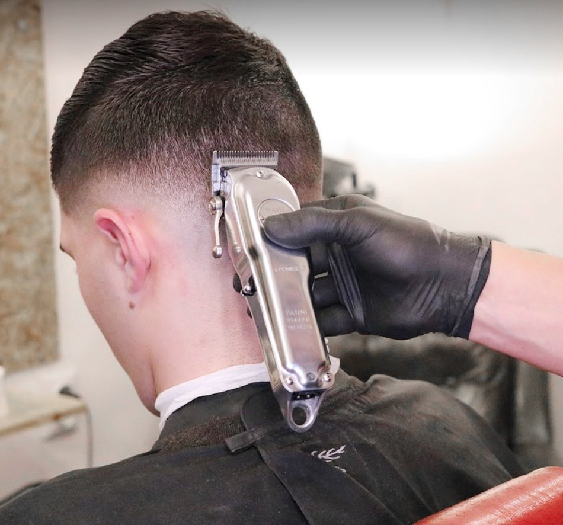

Haircuts
Fade haircuts in Zagreb: the complete guide to getting the fade you actually want
Low, mid, high, skin, razor — what each fade means, how to ask for it, and how often to come back.
The journal
Guides written by the barber — what the services on the board actually mean, how to ask for what you want, and how to keep it looking good between visits.
Haircuts
Low, mid, high, skin, razor — what each fade means, how to ask for it, and how often to come back.

Beards
The honest difference between a €15 clipper trim and a €20 razor beard cut — and which one your beard actually needs.

Shaves
Hot towels, cold steel and 30 minutes of calm — the full old-school ritual, step by step.